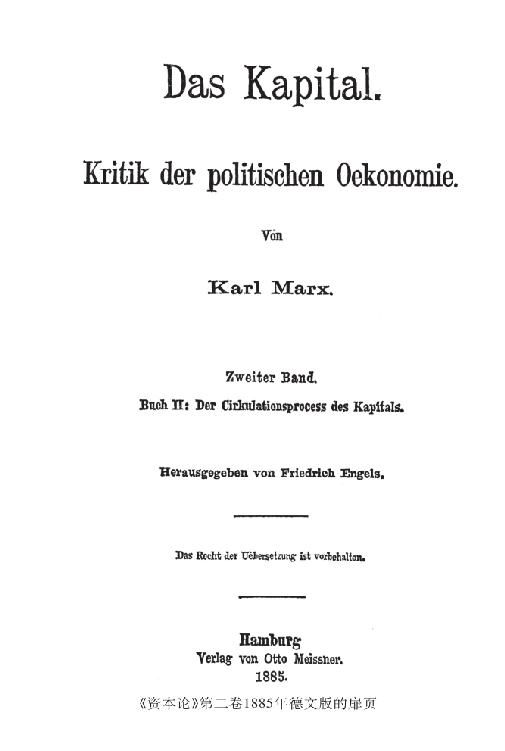

序言
要完成《资本论》第二册1的付印工作，使本书既成为一部连贯的、尽可能完整的著作，又成为一部只是作者的而不是编者的著作，这不是一件容易的事情。留下的文稿很多，多半带有片断性质，所以要完成这个任务就更为困难。至多只有一稿（第IV稿）已经过彻底校订，可以照原样付印。但是，由于有了以后的文稿，这一稿的大部分也变得陈旧了。材料的主要部分，虽然在实质上已经大体完成，但是在文字上没有经过推敲，使用的是马克思写摘要时惯用的语句：不讲究文体，有随便的、往往是粗鲁而诙谐的措辞和用语，夹杂英法两种文字的术语，常常出现整句甚至整页的英文。这是按照作者当时头脑中发挥的思想的原样写下来的。有些部分作了详细的论述，而另一些同样重要的部分只是作了一些提示。用做例解的事实材料搜集了，可是几乎没有分类，更谈不上加工整理了。在有些章的结尾，由于急于要转入下一章，往往只写下几个不连贯的句子，表示这里的阐述还不完全。最后，还有大家知道的、连作者自己有时也辨认不出的字体。
我只是把这些手稿尽可能逐字地抄录下来；在文体上，仅仅改动了马克思自己也会改动的地方，只是在绝对必要而且意思不会引起怀疑的地方，才加进几句解释性的话和承上启下的字句。意思上只要略有疑难的句子，我就宁愿原封不动地编入。我所改写和插入的文句，总共还不到10个印刷页，而且只是形式上的改动。
只要列举一下马克思为第二册留下的亲笔材料，就可以证明，马克思在公布他的经济学方面的伟大发现以前，是以多么无比认真的态度，以多么严格的自我批评精神，力求使这些伟大发现达到最完善的程度。正是这种自我批评的精神，使他的论述很少能够做到在形式上和内容上都适应他的由于不断进行新的研究而日益扩大的眼界。这个材料包括以下几部分：
首先是1861年8月—1863年6月写的《政治经济学批判》手稿，四开纸1 472页，共23个笔记本。这是1859年以同一书名在柏林出版的第一分册2的续篇。从第1—220页（第I—V笔记本），然后再从第1159—1472页（第XIX—XXIII笔记本），是论述《资本论》第一册中从货币转化为资本一直到卷末所研究的各个题目，是该书现有的最早文稿。从第973—1158页（第XVI—XVIII笔记本），是论述资本和利润、利润率、商人资本和货币资本，即那些后来在第三册手稿中阐述的题目。但是，在第二册论述的题目和后来在第三册论述的许多题目，都还没有专门加以整理。它们只是附带地，特别是在手稿的主体部分，第220—972页（第VI—XV笔记本），即《剩余价值理论》里提了一下。这一部分包括政治经济学核心问题即剩余价值理论的详细的批判史，同时以同前人进行论战的形式，阐述了大多数后来在第二册和第三册手稿中专门地、在逻辑的联系上进行研究的问题。这个手稿的批判部分，除了许多在第二册和第三册已经包括的部分之外，我打算保留下来，作为《资本论》第四册出版。3这个手稿虽然很有价值，但是能够用于现在出版的第二册的地方并不多。

按照时间的顺序，接下去是第三册的手稿。这个手稿至少大部分写于1864年和1865年。马克思在基本上完成这个手稿之后，才着手整理1867年印行的第一册。我现在正在整理这个第三册手稿，以便付印。
以后一段时间，即在第一册出版之后，有供第二册用的一组对开纸手稿，计四份，马克思自己作了I—IV的编号。其中第I稿（150页），大概写于1865年或1867年，这是现在这样编排的第二册的最早的一个独立的、但多少带有片断性质的文稿。这个手稿也没有什么可以利用的。第III稿一部分是引文和马克思札记本的提示的汇编（多半和第二册第一篇有关），一部分是关于个别论点的文稿，特别是涉及对亚·斯密关于固定资本和流动资本以及关于利润源泉的见解的批判的文稿；此外，还有属于第三册范围的关于剩余价值率和利润率的关系的论述。提示没有提供多少新的东西；用于第二册和第三册的论述部分，由于有了后来的文稿，大部分也只好弃置不用。——第IV稿是第二册第一篇和第二篇前几章的已经可以付印的文稿，这部分已经在适当的地方采用了。这个手稿虽然比第II稿写得早，但是，因为形式上比较完整，所以可以在本书适当的地方很好地加以利用，只要把第II稿的一些内容补充进去就行了。——最后的这份手稿，是第二册的唯一相当完整的文稿，稿上注明的日期是1870年。下面马上就要提到的供最后修订时参考的笔记说得很清楚：“第二个文稿必须作为基础。”
1870年以后，又有一个间歇期间，这主要是由马克思的病情造成的。他照例是利用这类时间进行各种研究。农学，美国的特别是俄国的土地关系，货币市场和银行业，最后，还有自然科学，如地质学和生理学，特别是独立的数学研究，成了这个时期的许多札记本的内容。1877年初，他感到健康已经恢复到可以进行原来的工作了。1877年3月底，他从上述四份手稿中作出提示和笔记，并以此作为重新写作第二册的基础。这一册的开头部分在第V稿（对开纸56页）中。这个手稿包括开头四章，还没有怎么加工。一些要点是放在正文下面的注释中来阐述的。材料与其说经过精心挑选，还不如说只是搜集在一起。但是，这个手稿是对第一篇的最重要部分的最后的完整的论述。——根据这份手稿整理出一份可以付印的手稿的第一次尝试，是第VI稿（写于1877年10月以后和1878年7月以前）；只有四开纸17页，包括第一章的大部分，第二次也就是最后一次尝试，是“1878年7 月2日”写成的第VII稿，它只有对开纸7页。
看来，这时马克思已经明白了，如果他的健康状况不根本好转，他就决不能完成他的第二册和第三册的写作工作，使之达到自己满意的程度。事实上，第V—VIII稿已经够多地留下了他同折磨人的疾病进行顽强斗争的痕迹。第一篇最难的部分在第V稿重新改写了；第一篇其余的部分和整个第二篇（第十七章除外）没有什么重大的理论上的困难；但是第三篇，即社会资本的再生产和流通，在马克思看来，非重写不可。因为第II稿在论述再生产时，起初没有考虑到作为再生产中介的货币流通，后来考虑到这种货币流通就再一次作了论述。这种情况应当消除，全篇应当改写，以适应作者已经扩大的眼界。这样就产生了第VIII稿，这是一个只有四开纸70页的笔记本；只要对照一下现在印成的第三篇（采自第II稿的插入部分除外），就可以知道，马克思善于把多少东西压缩到这个篇幅中去。
这个手稿也只是对问题的初步考察；它的首要课题，是确定并且阐述那些对第II稿来说是新获得的观点，而对那些没有新东西可说的论点，就不加考虑了。与第三篇多少有关的第二篇第十七章的重要部分又被吸收了进来并作了扩展。逻辑的联系常常中断；有些地方的论述不完整，特别是结尾部分的论述完全是片断的。但是，马克思要说的话，在这里以这种或那种方式都说了。
这就是第二册的材料。马克思逝世前不久曾对他的女儿爱琳娜说，希望我根据这些材料“做出点什么”来。我在最有限的范围内接受了这种委托；我尽可能把我的工作限制在单纯选择各种文稿方面。因此，我总是把最后的文稿作为根据，并参照了以前的文稿。只有第一篇和第三篇出现了实际的、不仅仅是技术性的困难；而这种困难也不小。我总是设法完全根据作者的精神去解决这些困难。
本卷的引文，在用做事实例证的地方，或在每一个想探究问题的人都可以找到原文（例如亚·斯密著作的引文）的地方，大多数我都翻译出来了。只有第十章不能这样做，因为那里要直接批判英文原文。——摘自第一卷的引文，都注明了第二版即马克思生前付印的最后一版的页码。
第三册可用的材料，除了手稿《政治经济学批判》中最初的论述，除了第III稿中前面提到的部分和一些随手记入札记本的简短笔记，只有上述1864—1865年写的那个对开纸的手稿，它经过和第二册的第II稿大致同样充分的加工，最后，还有一本1875年的手稿，是论述剩余价值率和利润率的关系的，这是用数学的方法（用方程式）来说明的。第三册的付印准备工作正在迅速进行。根据我现在的判断，这一工作的困难主要只是技术性的，当然，某些极为重要的章节是例外。
在这里，我要驳斥对马克思的一种指责。这种指责，最初只是个别人暗地里进行的。现在，在马克思逝世以后，却由德国讲坛社会主义者—国家社会主义者4及其信徒，当做不容置疑的事实加以宣扬，说什么马克思剽窃了洛贝尔图斯。关于这件事，我已经在另一个地方说了急需说的话(1)，但只有在这里，我才能提出有决定意义的证据。
据我所知，这种指责最初见于鲁·迈耶尔《第四等级的解放斗争》第43页：
“可以证明，马克思从这些出版物〈指那些可以追溯到30年代后半期的洛贝尔图斯的著作〉中，汲取了他的批判的大部分。”
在得到进一步的证据以前，我尽可以认为，这种断言之所以全部“可以证明”，是因为洛贝尔图斯曾经向迈耶尔先生保证有这么一回事。——1879年，洛贝尔图斯亲自出场了6，他在写给J. 采勒的信（1879年在蒂宾根出版的《一般政治学杂志》第219页）中，谈到他的《关于我国国家经济状况的认识》（1842年）一书时说：
“您将会发现，这一点〔指书中展开的思路〕(2)已经十分巧妙地被马克思……利用了，当然他没有引证我的话”。
洛贝尔图斯遗稿的出版者泰·科扎克也毫不隐讳地重复了这种说法（洛贝尔图斯《资本》1884年柏林版，导言第XV页）。——最后，在1881年由鲁·迈耶尔出版的洛贝尔图斯—亚格措夫博士的《书信和社会政治论文集》7中，洛贝尔图斯直截了当地说：
“我现在发现，谢夫莱和马克思剽窃了我，而没有提到我的名字”（第60封信第134页）。
在另一个地方，洛贝尔图斯的奢望表达得更明确：
“资本家的剩余价值是从哪里产生的，这个问题我已经在我的第三封社会问题书简中说明了，本质上和马克思一样，不过更简单、更明了。”（第48封信第111页）
所有这些关于剽窃的指责，马克思从来都是一无所知。他手边的一册《解放斗争》，只裁开了和“国际”有关的部分，其余的部分是在他逝世以后才由我裁开的。蒂宾根的杂志，马克思从来没有见到过。给鲁·迈耶尔的《书信》，他也毫无所知。说到“剽窃”的那个地方，只是到1884年，由迈耶尔博士先生自己好意地提起，才引起我的注意。不过，第四十八封信马克思是知道的。迈耶尔先生曾经好意地把原信交给马克思的小女儿。关于马克思的批判要在洛贝尔图斯那里寻找秘密源泉这样一些离奇的谣言，当然也传到了马克思的耳边。当时马克思把信给我看，并说，他在这里终于得到可靠的消息，知道洛贝尔图斯本人的奢望是什么。只要洛贝尔图斯不再说些别的什么，他，马克思，尽可以不予理睬；如果洛贝尔图斯认为他自己的叙述更简单、更明了，那就让他去享受这种乐趣。事实上，马克思认为，整个事情已经由洛贝尔图斯的这封信而了结了。
马克思完全可以这样想，因为正如我清楚地知道的，直到1859年前后，他对洛贝尔图斯的全部文字活动还是一无所知，而这时，他自己的政治经济学批判不仅在纲要上已经完成，而且在最重要的细节上也已经完成。1843年，他在巴黎开始研究经济学时，是从伟大的英国人和法国人开始的。在德国人当中，他只知道劳和李斯特，而有这两个人，对他说来也就够了。马克思和我以前都根本没有听说过洛贝尔图斯，直到1848年，当我们要在《新莱茵报》上批判洛贝尔图斯这位柏林议员的演说和他充任大臣的活动时8，我们才知道这个人。当时，我们对他什么也不了解，就去问莱茵省的议员，这个突然当了大臣的洛贝尔图斯究竟是什么人。然而那些议员也不能告诉我们洛贝尔图斯的经济学著作方面的任何东西。可是，当时马克思在没有洛贝尔图斯的任何帮助下，不仅已经非常清楚地知道“资本家的剩余价值”是从哪里“产生”的，而且已经非常清楚地知道它是怎样“产生”的。这一点，从1847年的《哲学的贫困》和1847年在布鲁塞尔所作的、1849年发表在《新莱茵报》第264—269号上的关于雇佣劳动与资本的讲演，可以得到证明。1859年前后，马克思才从拉萨尔那里知道还有洛贝尔图斯这样一个经济学家，后来他在英国博物馆看到了洛贝尔图斯的《第三封社会问题书简》。
实际情况就是这样。马克思从洛贝尔图斯那里“剽窃”的内容又是怎样的呢？洛贝尔图斯说：
“资本家的剩余价值是从哪里产生的，这个问题我已经在我的第三封社会问题书简中说明了，和马克思一样，不过更简单、更明了。”
因此，核心问题是：剩余价值理论；事实上不能说，洛贝尔图斯还能从马克思那里把别的什么东西说成是他所有的。因此，洛贝尔图斯在这里自封为剩余价值理论的真正创始人，而马克思从他那里剽窃了剩余价值理论。
这个第三封社会问题书简又怎样向我们说明剩余价值的产生呢？只不过是这样：被他看做地租和利润之和的“租”所以产生，不是由于对商品价值的“价值追加”，而是
“由于工资所受到的价值扣除，换句话说，由于工资仅仅构成产品价值的一部分”，
并且在有足够的劳动生产率的情况下，
“工资不需要等于劳动产品的自然交换价值，以便后者还会留下一部分作为资本的补偿〈！〉和租”9。
这里没有告诉我们，如果从产品的“自然交换价值”中没有留下一部分作为“资本的补偿”，更确切些说，作为原料和工具磨损的补偿，那这是什么样的产品“自然交换价值”。
幸而我们还能够证实，洛贝尔图斯这个划时代的发现，对马克思产生了什么样的印象。在《批判》手稿10第X笔记本第445页及以下几页中，我们发现了《插入部分。洛贝尔图斯先生。新的租的理论》。在这里，马克思只是从这个观点来看待第三封社会问题书简的。马克思在下面一段话中驳倒了洛贝尔图斯的一般剩余价值理论，他用讽刺的口气说：“洛贝尔图斯先生首先研究在土地占有和资本占有还没有分离的国家中是什么情况，并且在这里得出重要的结论说：租（他所谓租，是指全部剩余价值）只等于无酬劳动，或无酬劳动借以表现的产品量。”
资本主义下的人，生产剩余价值已经有几百年了，他们渐渐想到剩余价值起源的问题。最早的见解是从商人的直接的实践中产生的：剩余价值产生于产品价值的加价。这种见解曾在重商主义者11中间占统治地位，但是詹姆斯·斯图亚特已经看到，在这种情况下，一人之所得必然是他人之所失。尽管如此，在很长一段时间，特别是在社会主义者中间，这种见解仍然阴魂不散。然而它被亚·斯密从古典科学中赶出去了。
斯密在《国富论》第一篇第六章中说：
“一旦资本在个人手中积累起来，其中某些人自然就利用它使勤劳者去劳动，向他们提供原料和生活资料，以便从他们的劳动产品的出售中，或者说，从这些工人的劳动加到那些原料价值上的东西中，取得利润…… 工人加到原料上的价值，在这里分成两部分，一部分支付工人的工资，另一部分支付雇主的利润，作为他预付在原料和工资上的全部资本的报酬。”12
稍后，他又说：
“一旦一个国家的土地全部变成了私有财产，土地所有者也像所有其他人一样，喜欢在他们未曾播种的地方得到收获，甚至对土地的自然成果也索取地租…… 工人……必须把用自己的劳动收集或生产的东西让给土地所有者一部分，这一部分，或者说，这一部分的价格，就构成地租。”13
对于这段话，马克思在上述《批判》手稿第253页中作了如下评注：“可见，亚·斯密把剩余价值，即剩余劳动——已经完成并对象化在商品中的劳动超过有酬劳动即超过以工资形式取得自己等价物的劳动的余额——理解为一般范畴,而本来意义上的利润和地租只是这一般范畴的分支。”
其次，斯密在第一篇第八章中说：
“一旦土地成为私有财产，对劳动者在这块土地上所能生产和收集的几乎一切产品，土地所有者都要求得到一份。他的地租是对耕种土地的劳动所生产的产品的第一个扣除。但是，种地人在收获以前很少有维持自己生活的资金。他的生活费通常是从他的雇主即租地农场主的资本中预付的。如果租地农场主不能从工人劳动的产品中得到一份，或者说，如果他的资本不能得到补偿并带来利润，他就没有兴趣雇人了。这种利润是对耕种土地的劳动所生产的产品的第二个扣除。几乎所有其他劳动的产品都要作这样的扣除，来支付利润。在所有产业部门，大多数工人都需要雇主预付给他们原料以及工资和生活费，直到劳动完成的时候为止。这个雇主从他们劳动的产品中得到一份，或者说，从他们的劳动加到加工原料上的价值中得到一份，这一份也就是雇主的利润。”14
对于这段话，马克思的评注是（手稿第256页）：“总之，亚·斯密在这里直截了当地把地租和资本的利润称为纯粹是工人产品中的扣除部分，或者说，是与工人加到原料上的劳动量相等的产品价值中的扣除部分。但是，正如亚·斯密自己在前面证明过的，这个扣除部分只能由工人加到原料上的、超过只支付他的工资或只提供他的工资等价物的劳动量的那部分劳动构成；因而这个扣除部分是由剩余劳动，即工人劳动的无酬部分构成。”
可见，亚·斯密已经知道“资本家的剩余价值是从哪里产生的”，以及土地所有者的剩余价值是从哪里产生的；马克思在1861年已经坦率地承认了这一点，而洛贝尔图斯和他的那伙在国家社会主义的温暖的夏雨中像蘑菇一样繁殖起来的崇拜者，看来已经把这一点忘得一干二净。
马克思接着说：“然而，斯密并没有把剩余价值本身作为一个专门范畴同它在利润和地租中所具有的特殊形式区别开来。斯密尤其是李嘉图在研究中的许多错误和缺点，都是由此而产生的。”15——这个论点可以一字不差地用在洛贝尔图斯身上。他的“租”只是地租＋利润之和；关于地租，他提出了一种完全错误的理论，关于利润，他盲目地接受了他的前辈的说法。——而马克思的剩余价值，却是生产资料所有者不付等价物就占有的价值额的一般形式。这个价值额，按照马克思首先发现的一些十分独特的规律，分割为利润和地租这样一些特殊的转化形式。这些规律将要在第三卷中加以阐述。在那里将第一次说明，从理解一般剩余价值到理解剩余价值转化为利润和地租，从而理解剩余价值在资本家阶级内部进行分配的规律，需要经过多少中间环节。
李嘉图比亚·斯密已经前进了一大步。李嘉图关于剩余价值的见解是建立在一种新价值理论的基础上的，这种理论在亚·斯密那里虽然已见萌芽，但在阐述中又几乎总是被他忘记，这种价值理论成了以后一切经济科学的出发点。李嘉图从商品价值由实现在商品中的劳动量决定，引申出由劳动加到原料中去的价值量在工人和资本家之间进行分配，也就是它分割为工资和利润（这里指剩余价值）。他论证了：无论这两部分的比例怎样变动，商品的价值总是不变，这个规律，他认为只有个别例外。他甚至确立了关于工资和剩余价值（在利润形式上理解的剩余价值）的相互关系的一些主要规律，尽管他的理解过于一般化（马克思《资本论》第一卷第十五章A16），他还指出，地租是在一定条件下产生的超过利润的余额。——在上述各点中，洛贝尔图斯没有任何一点超过李嘉图。李嘉图理论的内在矛盾——这些矛盾使李嘉图学派遭到破产——，要么洛贝尔图斯毫无所知，要么只是导致他提出一些乌托邦的要求（《认识》第130页），而不是寻求经济学上的解决。
然而李嘉图关于价值和剩余价值的学说，用不着等到洛贝尔图斯的《认识》出现，才用于社会主义的目的。在《资本论》第一卷第609页（第二版）17上，从《国民困难的原因及其解决办法。给约翰·罗素勋爵的一封信》（1821年伦敦版）这一著作中引用了“剩余产品或资本的占有者”这一说法。这一著作单凭“剩余产品或资本”这个说法本应该引起人们的重视，正是马克思使这本40页的小册子没有被埋没。在这一著作中说：
“无论资本家得到的份额有多大〔从资本家的立场出发〕，他总是只能占有工人的剩余劳动，因为工人必须生活。”（第23页）
但是，工人怎样生活，从而资本家占有的剩余劳动能有多大，那是一个极其相对的量。
“如果资本的价值不按照资本量增加的比例而减少，资本家就会超过工人能够维持生活所需要的最低限度从工人那里榨取每一个劳动小时的产品……资本家最后可以对工人说：你不应当吃面包，因为吃甜菜和马铃薯也可以过活；我们已经到了这个地步。”（第23、24页）“如果工人能够做到用马铃薯代替面包生活，那就毫无疑问，从他的劳动中可以榨取更多的东西。这就是说，如果靠面包生活，他要维持自己和他的家庭，他必须为自己保留星期一和星期二的劳动，如果靠马铃薯生活，他就只需要为自己保留星期一的一半。星期一的另一半和星期二的全部就可以游离出来，以使国家或资本家得利。”（第26页）“谁都承认，支付给资本家的利息，无论是采取地租、货币利息的形式，还是采取企业利润的形式，都是用别人的劳动来支付的。”（第23页）
可见，在这里所说的完全是洛贝尔图斯的“租”，只是用“利息”代替“租”罢了。
马克思对这段话作了如下的评注（《批判》手稿第852页）：“这本几乎没有人知道的小册子，是在‘不可相信的修鞋匠’麦克库洛赫18开始被人注意的时候出现的，它包含一个超过李嘉图的本质上的进步。它直接把剩余价值，或李嘉图所说的‘利润’（常常也把它叫做剩余产品, surplus produce），或这本小册子作者所说的利息，看做surplus labour，剩余劳动，即工人无偿地从事的劳动，也就是工人除了补偿他的劳动力价值的劳动量，即生产他的工资的等价物的劳动量以外而从事的劳动。把体现在剩余产品中的剩余价值归结为剩余劳动，同把价值归结为劳动是一样重要的。这一点其实亚·斯密已经说过，并且成为李嘉图的阐述中的一个主要因素。但是，他们从来没有以绝对的形式把它说出来并确定下来。”往下在手稿第859页上还说：“可是，这位作者为既有的经济范畴所束缚。就像李嘉图由于把剩余价值同利润混淆起来而陷入令人不快的矛盾一样，他也由于把剩余价值命名为资本利息而陷入同样的矛盾。诚然，他在以下方面超过了李嘉图：首先，他把一切剩余价值都归结为剩余劳动，其次，他虽然把剩余价值叫做资本利息，同时又强调指出，他把‘资本利息’理解为剩余劳动的一般形式，而与剩余劳动的特殊形式，地租、货币利息和企业利润相区别。但是，他还是把这些特殊形式之一的名称‘利息’，当做一般形式的名称。这就足以使他重新陷入经济学的费解的行话（手稿中用的是“slang”）中。”
最后这一段话，用在我们的洛贝尔图斯身上是再恰当不过了。他也为既有的经济范畴所束缚。他也用剩余价值转化成的一个分支形式——租——来称呼剩余价值，并使剩余价值成为一种极不确定的东西。这两个错误的结果是：他再度陷入经济学的费解的行话中，他比李嘉图前进了一步，但是他没有批判地把这种进步继续下去，反而使他的未完成的理论，在孵化出壳以前，就成为一种乌托邦的基础，可是，就乌托邦而论，他也像往常一样，来得太迟了。上述小册子于1821年问世，已经远远走在1842年洛贝尔图斯的“租”的前头了。
在20年代，在为无产阶级的利益而利用李嘉图的价值理论和剩余价值理论来反对资本主义生产，以及用资产阶级自己的武器来和资产阶级进行斗争的全部文献中，我们说到的这本小册子，不过是站在最前面的前哨。欧文的整个共产主义19在进行经济学论战时，是以李嘉图为依据的。但除了李嘉图还有许多著作家，马克思1847年在反驳蒲鲁东时（《哲学的贫困》第49页20），只引用了其中几个，如埃德蒙兹、汤普森、霍吉斯金等等，而且“还可以写上四页”。从这许许多多的著作中我只随便举出汤普森的一本著作：《最能促进人类幸福的财富分配原理的研究》（1850年伦敦新版）。该书写于1822年，1824年第一次出版。在这本书里也到处都指出，非生产阶级所占有的财富，是对工人产品的扣除，而且措辞相当激烈。
“我们称之为社会的那种人总是力图通过欺骗或诱劝，通过威胁或强迫，使生产工人从事劳动，但只使他得到自己劳动的产品中尽可能小的部分。”（第28页）“为什么工人不应该得到他的劳动的所有全部产品呢？”（第32页）“资本家以地租或利润的名义向生产工人索取的报酬，是以后者使用了土地或其他物品为借口而要求取得的…… 既然除了自己的生产能力一无所有的生产工人，他的生产能力在其中实现或借以实现的一切物质资料，全都归同他的利益相对立的其他人所有，他要进行活动先要取得这些人的同意，所以，他从自己的劳动果实中能够得到多大的部分作为这个劳动的报酬，岂不是取决于而且必须取决于资本家的恩典吗？”（第125页）“……和扣除的产品的量成比例，而不管这个产品量叫做租税，利润，还是叫做贼赃……这些被侵吞的东西”（第126页）等等。
我承认，我写这几行时，不免感到有些惭愧。尽管马克思在《哲学的贫困》中就已经直接提到20年代和30年代的英国反资本主义的文献，其中有些著作，如1821年出版的那本小册子，莱文斯顿、霍吉斯金等人的著作，还在《资本论》第一卷中多次引用过，可是在德国，人们对这些文献还是一无所知。这还可以容忍。但是，不仅那位在绝望中揪住洛贝尔图斯的衣角而“确实不学无术的”庸俗作家(3)，而且那位身居要职、“自炫博学”的教授(4)，也把自己的古典经济学忘记到这种程度，竟把那些在亚·斯密和李嘉图那里就可以读到的东西，煞有介事地硬说是马克思从洛贝尔图斯那里窃取来的，——这个事实就证明，官方的经济学今天已经堕落到何等地步。
那么，马克思关于剩余价值说了什么新东西呢？为什么马克思的剩余价值理论，好像晴天霹雳震动了一切文明国家，而所有他的包括洛贝尔图斯在内的社会主义前辈们的理论，却没有发生过什么作用呢？
化学史上有一个例证可以说明这一点。
大家知道，直到前一世纪末，燃素说还处于支配的地位。根据这种理论，一切燃烧的本质都在于从燃烧物体中分离出一种另外的、假想的物体，即称为燃素的绝对燃烧质。这种理论曾足以说明当时所知道的大多数化学现象，虽然在某些场合不免有些牵强附会。但到1774年，普利斯特列析出了一种气体，
“他发现这种气体是如此纯粹或如此不含燃素，以致普通空气和它相比显得污浊不堪”。
他称这种气体为无燃素气体。过了不久，瑞典的舍勒也析出了这种气体，并且证明它存在于大气中。他还发现，当一种物体在这种气体或普通空气中燃烧时，这种气体就消失了。因此，他称这种气体为火气。
“从这些事实中他得出一个结论：燃素与空气的一种成分相结合时〔即燃烧时〕所产生的化合物，不外就是通过玻璃失散的火或热。”(5)
普利斯特列和舍勒析出了氧气，但不知道他们所析出的是什么。他们为“既有的”燃素说“范畴所束缚”。这种本来可以推翻全部燃素说观点并使化学发生革命的元素，在他们手中没有能结出果实。但是，当时在巴黎的普利斯特列立刻把他的发现告诉了拉瓦锡，拉瓦锡就根据这个新事实研究了整个燃素说化学，方才发现：这种新气体是一种新的化学元素；在燃烧的时候，并不是神秘的燃素从燃烧物体中分离出来，而是这种新元素与燃烧物体化合。这样，他才使过去在燃素说形式上倒立着的全部化学正立过来了。即使不是像拉瓦锡后来硬说的那样，他与其他两人同时和不依赖他们而析出了氧气，然而真正发现氧气的还是他，而不是那两个人，因为他们只是析出了氧气，但甚至不知道自己所析出的是什么。
在剩余价值理论方面，马克思与他的前人的关系，正如拉瓦锡与普利斯特列和舍勒的关系一样。在马克思以前很久，人们就已经确定我们现在称为剩余价值的那部分产品价值的存在；同样也有人已经多少明确地说过，这部分价值是由什么构成的，也就是说，是由占有者不付等价物的那种劳动的产品构成的。但是到这里人们就止步不前了。其中有些人，即资产阶级古典经济学家，至多只研究了劳动产品在工人和生产资料所有者之间分配的数量比例。另一些人，即社会主义者，则发现这种分配不公平，并寻求乌托邦的手段来消除这种不公平现象。这两种人都为既有的经济范畴所束缚。
于是，马克思发表意见了，他的意见是和所有他的前人直接对立的。在前人认为已有答案的地方，他却认为只是问题所在。他认为，这里摆在他面前的不是无燃素气体，也不是火气，而是氧气；这里的问题不是在于要简单地确认一种经济事实，也不是在于这种事实与永恒公平和真正道德相冲突，而是在于这样一种事实，这种事实必定要使全部经济学发生革命，并且把理解全部资本主义生产的钥匙交给那个知道怎样使用它的人。根据这种事实，他研究了全部既有的经济范畴，正像拉瓦锡根据氧气研究了燃素说化学的各种既有的范畴一样。要知道什么是剩余价值，他就必须知道什么是价值。李嘉图的价值理论本身必须首先加以批判。于是，马克思研究了劳动形成价值的特性，第一次确定了什么样的劳动形成价值，为什么形成价值以及怎样形成价值，并确定了价值不外就是这种劳动的凝固，而这一点是洛贝尔图斯始终没有理解的。马克思进而研究商品和货币的关系，并且论证了商品和商品交换怎样和为什么由于商品内在的价值属性必然要造成商品和货币的对立。他的建立在这个基础上的货币理论是第一个详尽无遗的货币理论，今天已为大家所默认了。他研究了货币向资本的转化，并证明这种转化是以劳动力的买卖为基础的。他以劳动力这一创造价值的属性代替了劳动，因而一下子就解决了使李嘉图学派破产的一个难题，也就是解决了资本和劳动的相互交换与李嘉图的劳动决定价值这一规律无法相容这个难题。他确定了资本分为不变资本和可变资本，就第一个详尽地阐述了剩余价值形成的实际过程，从而说明了这一过程，而这是他的任何一个前人都没有做到的；因而，他确定了资本自身内部的区别，这个区别是洛贝尔图斯和资产阶级经济学家都完全不可能作出的，但是这个区别提供了一把解决经济学上最复杂的问题的钥匙，关于这一点，这第二册又是一个最令人信服的证明，以后我们会知道，第三册更是这样。马克思还进一步研究了剩余价值本身，发现了它的两种形式，即绝对剩余价值和相对剩余价值，并且证明，这两种形式在资本主义生产的历史发展中起了不同的然而都是决定性的作用。他根据剩余价值，阐明了我们现在才具有的第一个合理的工资理论，第一次指出了资本主义积累史的各个基本特征，并说明了资本主义积累的历史趋势。
而洛贝尔图斯呢？他读了这一切之后，却在其中——像任何有倾向的经济学家一样！——发现“对社会的入侵”21，发现他自己已经更简单得多、更明了得多地指出了剩余价值是从哪里产生的，最后，还发现这一切虽然适用于“今日的资本形式”，即适用于历史地存在的资本，然而不适用于“资本概念”，即不适用于洛贝尔图斯先生关于资本的乌托邦观念。这完全和至死坚持燃素，而不想对氧气有所理解的老普利斯特列一样。只是普利斯特列确实是最早析出氧气的人，而洛贝尔图斯在他的剩余价值中，或者更确切些说，在他的“租”中，只是重新发现了一种陈词滥调。但马克思和拉瓦锡的做法相反，他不屑于说，剩余价值存在的事实是他最早发现的。
洛贝尔图斯在经济学其他方面的成就，也是这个水平。他把剩余价值搞成乌托邦的做法，马克思在《哲学的贫困》中已经无意中进行了批判；关于这一点还要说的话，我已经在该书的德文译本的序言 5中说到。他把商业危机的原因解释为工人阶级的消费不足，这种说法在西斯蒙第的《政治经济学新原理》第四卷第四章中已经可以看到。(6)只是西斯蒙第在这个问题上始终注意到世界市场，而洛贝尔图斯的眼界却没有超出普鲁士的国界。洛贝尔图斯关于工资来源于资本还是来源于收入的那些思辨议论，属于经院哲学的范围，并且已经在这个《资本论》第二册的第三篇中完全澄清了。他的地租理论仍然是他的唯一的财产，在马克思批判这一理论的手稿22出版以前，还可以安睡一会。最后，他关于旧普鲁士的土地所有权应该从资本压迫下解放出来的建议，又是彻头彻尾乌托邦的，这些建议回避了这里谈到的唯一实际问题：旧普鲁士的容克怎样能够做到每年收入比如说20 000马克，支出比如说30 000马克，而仍然不负债？
1830年左右，李嘉图学派在剩余价值问题上碰壁了。他们解决不了的问题，他们的追随者，庸俗经济学，当然更不能解决。使李嘉图学派破产的，有以下两点：
第一，劳动是价值的尺度。但是，活劳动在和资本进行交换时，它的价值小于所交换的对象化劳动。工资，一定量活劳动的价值，总是小于同量活劳动所生产的产品的价值，或体现同量活劳动的产品的价值。这个问题这样提出，实际上是无法解决的。它由马克思正确地提出，因而得到了解答。不是劳动有价值。劳动作为创造价值的活动，不能有特殊的价值，正像重不能有特殊的重量，热不能有特殊的温度，电不能有特殊的电流强度一样。作为商品买卖的，不是劳动，而是劳动力。一旦劳动力成为商品，它的价值就决定于它作为社会产品所体现的劳动，就等于它的生产和再生产所需要的社会必要的劳动。因此，劳动力按照它的这种价值来买卖，是和经济学的价值规律决不矛盾的。
第二，按照李嘉图的价值规律，假定其他一切条件相同，两个资本使用等量的、有同样报酬的活劳动，在相同的时间内会生产价值相等的产品，也会生产相等的剩余价值或利润。但是，如果这两个资本所使用的活劳动的量不相等，那么，它们就不能生产相等的剩余价值，或如李嘉图学派所说的利润。但是情况恰恰相反。实际上，等额的资本，不论它们使用多少活劳动，总会在相同时间内生产平均的相等的利润。因此，这就和价值规律发生了矛盾。李嘉图已经发现了这个矛盾，但是他的学派同样没有能够解决这个矛盾。洛贝尔图斯也不能不看到这个矛盾，但是他不去解决它，却把它作为他的乌托邦的出发点之一（《认识》第131页）。马克思在《批判》手稿中，已经解决了这个矛盾；23按照《资本论》的计划，这个问题要在第三册来解决。24第三册的出版，还要过几个月。因此，那些想在洛贝尔图斯那里发现马克思的秘密源泉和把洛贝尔图斯看做马克思的一个卓越先驱者的经济学家们，在这里有机会可以表明，洛贝尔图斯的经济学到底能够提供什么。如果他们能够证明，相等的平均利润率怎样能够并且必须不仅不违反价值规律，而且反而要以价值规律为基础来形成，那么，我们就愿意同他们继续谈下去。不过他们最好是快一点。这个第二册的卓越的研究，以及这种研究在至今几乎还没有人进入的领域内所取得的崭新成果，仅仅是第三册的内容的引言，而第三册，将阐明马克思对资本主义基础上的社会再生产过程的研究的最终结论。等到这个第三册出版的时候，洛贝尔图斯这个经济学家，就用不着再提了。
马克思多次对我说过，《资本论》第二册和第三册是献给他的夫人的。
弗里德里希·恩格斯
1885年5月5日马克思的生日，于伦敦
(1) #为卡尔·马克思《哲学的贫困。答蒲鲁东先生的〈贫困的哲学〉》（爱·伯恩施坦和卡·考茨基译成德文，1885年斯图加特版）一书写的序言。5
(2) 1893年德文第二版中的方括号（恩格斯的改动或增补），本卷用六角括号〔 〕。——编者注
(3) 指鲁·迈耶尔。——编者注
(4) 指阿·瓦格纳。——编者注
(5) 罗斯科和肖莱马《化学教程大全》1877年不伦瑞克版第1卷第13页和第18页。
(6) “可见，由于财富集中在少数所有者手中，国内市场就越来越缩小，工业就越来越需要到国外市场去寻找销路，但是在那里，它会受到更大的变革的威胁”（即下面接着说到的1817年危机）。《新原理》1819年版第1卷第336页。
1 《资本论》第二卷系统地阐述了资本的流通过程，对资本的循环、资本的周转、社会总资本的再生产问题，进行了深入分析，论述了社会生产中生产资料生产和生活资料生产两大部类之间按比例生产的客观规律性和资本主义条件下生产无政府状态的不可避免性。本卷论述的资本流通过程是《资本论》第一卷论述的资本生产过程的继续和补充，资本的整个运动过程是资本生产过程和资本流通过程的统一。
早在《资本论》的第一个手稿即1857—1858年手稿中，马克思在论述“资本的生产过程”之后，接着写了“资本的流通过程”的内容。马克思结合资本积累理论，初步探讨了各生产部门的产品实现问题，研究了资本周转问题以及周转时间和周转速度对剩余价值的影响，并着重对固定资本和流动资本作出了科学的规定。在《资本论》的第二个手稿即1861—1863年手稿中，马克思结合对亚·斯密观点的批判，吸收弗·魁奈“经济表”的思想精华，第一次提出并初步论述了社会资本再生产理论的基本原理。但是，在这两部手稿中，关于资本流通过程的各个理论要素还没有系统化。在1863—1865年《资本论》的第三个手稿中，马克思才形成了关于资本流通过程的系统论述和第二册的正式结构。
在1863—1865年期间，马克思分别写了《资本论》三册的手稿。马克思先写的是第一册的手稿，接着写的是第三册的手稿，第三册手稿只写到前半部分，就转入了第二册（第I稿）手稿的写作，第二册第I稿写完后才补写了第三册的后半部分。因此第二册第I稿和第三册手稿是交叉着写的。第二册第I稿写于1865年上半年，标题为《第二册。资本的流通过程》，“第I稿”是马克思的编号，这个稿本包含了后来《资本论》第二卷的所有三个部分。1868年底—1870年7月，马克思写了第二册的第II稿，理论论述比第I稿更加完善。恩格斯称它“是第二册的唯一相当完整的文稿”（见本卷第7页）。马克思生前也提示，在以后编辑出版《资本论》第二册时，“第二个文稿必须作为基础”（见本卷第7页）。除了这两个全卷手稿之外，马克思还写有一些片断稿，主要有：第III稿（1867年9月）、第IV稿（1868年4—5月）、第V稿（1877年4—9月）、第VI稿（1877年10月—1878年6月）、第VII稿（完成于1878年7月2日）和第VIII稿（1880—1881年）。马克思在生前最后两年没有再从事第二册的手稿写作。马克思逝世后，编辑出版第二册和第三册的任务落到恩格斯的肩上。
马克思原来设想，《资本论》将以三卷四册的形式出版。他在《资本论》第一卷《序言》中曾预告，《资本论》第一卷是第一册，第二卷包括第二、三册，第三卷是第四册（理论史）。恩格斯在研究了马克思留下的手稿的内容并考虑手稿的篇幅后，决定改变马克思原来的设想，把第二册编成第二卷，第三册编成第三卷。恩格斯在编辑工作中极其慎重地对待马克思的手稿。他遵照马克思的提示，以第二册第II稿为基础并吸收其他片断稿的成果，经过两年多的辛勤劳动，最后编成了《资本论》第二卷，第二册第I稿未被采用。恩格斯编辑的《资本论》第二卷共分三篇二十一章，于1885年7月在汉堡出版。恩格斯为第二卷写了《序言》，对编辑工作和各个手稿的采用情况作了说明，并驳斥了资产阶级对马克思的指责。1893年出版了《资本论》第二卷第二版。
本卷的中译文与《马克思恩格斯全集》中文第2版第45卷一致，是在《马克思恩格斯全集》中文第1版第24卷译文的基础上，根据民主德国统一社会党中央马列主义研究院编辑出版的《马克思恩格斯全集》德文版第24卷并参考《马克思恩格斯全集》历史考证版第2部分第12卷重新校订的。——3。 2 指马克思的《政治经济学批判。第一分册》，该书于1859年6月在柏林出版（见《马克思恩格斯全集》中文第2版第31卷第411—582页）。——4。
3 恩格斯本来打算把马克思关于《剩余价值理论》的手稿作为《资本论》第四卷出版，但他未能实现这一计划。1905—1910年卡·考茨基编辑出版了《剩余价值理论》，他对马克思的手稿做了删改和变动。1954—1961年苏共中央马列主义研究院出版了《剩余价值理论》俄文版。德国统一社会党中央马列主义研究院于1956—1962年以俄文版为依据出版了德文新版本。《剩余价值理论》的第一个中文译本是郭大力根据考茨基的版本翻译的，书名为《剩余价值学说史》（共三卷），1949年6月在长春由新中国书局出版发行。以《剩余价值理论》著称的这部分手稿现收入《马克思恩格斯全集》中文第二版第33—35卷。——4。
4 讲坛社会主义是19世纪70—90年代一个资产阶级思想流派。该派的代表人物主要是德国的大学教授，他们在大学的讲坛上宣扬资产阶级改良主义。讲坛社会主义的代表古·施穆勒、路·布伦坦诺、阿·瓦格纳、卡·毕歇尔、韦·桑巴特等人认为国家是超阶级的组织，因而鼓吹资产阶级和无产阶级之间的阶级和平，主张不触动资本家的利益，逐步实行“社会主义”。因此，讲坛社会主义的纲领仅局限于提出一些社会改良措施，如设立工人疾病和伤亡事故保险等，其目的在于削弱阶级斗争，消除革命的社会民主党人的影响，并使工人同反动的普鲁士国家和解。他们把普鲁士政府实施的铁路国有化和由奥·俾斯麦策划而实行的国家对烟草和烧酒的垄断叫做“国家社会主义”。马克思和恩格斯对讲坛社会主义进行了坚持不懈的斗争，揭露了它反动和反科学的性质。——9。
[5] 马克思的《哲学的贫困。答蒲鲁东先生的〈贫困的哲学〉》是1847年用法文写成并出版的。马克思生前没有全文再版过。由爱·伯恩施坦和卡·考茨基翻译的第一个德文版于1885年1月出版。恩格斯为这个版本校订了译文，写了许多注释，并且写了序言。该序言于1884年10月23日写成，用《马克思和洛贝尔图斯》（见《马克思恩格斯文集》第4卷）的标题，发表在1885年1月的《新时代》杂志第3年卷第1期上。——10、23。
6 洛贝尔图斯污蔑马克思进行剽窃的信是1875年3月14日写给J.采勒的。洛贝尔图斯于当年去世，恩格斯说1879年，洛贝尔图斯亲自出场了，是指该信于1879年第一次在《一般政治学杂志》（蒂宾根）上发表。——10。
7 马克思的私人藏书中存有洛贝尔图斯博士的《书信和社会政治论文集》，该书上有恩格斯写的评语。——10。
8 《新莱茵报》1848年对洛贝尔图斯作为柏林议员的演说和充任大臣的活动的批判，见《新莱茵报》1848年6月24日第24号的《汉泽曼内阁》；1848年7月4日第34号的《妥协辩论》；1848年7月26日第56号的《关于区级会议的妥协辩论》；1848年9月10日第99号的《办事内阁的垮台》、《丹麦和普鲁士的休战》；1848年9月12日第100号的《危机和反革命》；1848 年11月9日第138号的《柏林的危机》。——12。
9 洛贝尔图斯《给冯·基尔希曼的社会问题书简。第三封：驳李嘉图的地租学说，并论证新的租的理论》1851年柏林版第87页。——13。
10 恩格斯在本卷中所说的“《批判》手稿”均指《政治经济学批判（1861—1863年手稿）》。这是一部篇幅很大的手稿。在该手稿的《剩余价值理论》部分中，马克思围绕剩余价值理论这个政治经济学的核心问题，对各派资产阶级经济学家的理论进行了系统的、历史的分析批判，同时以论战的形式阐述了自己的政治经济学理论的许多重要方面。马克思曾计划在这部分手稿的基础上写出他称之为历史部分，历史批判部分或历史文献部分的《资本论》第四卷。《资本论》前三卷则称为理论部分。——13。
11 重商主义（Merkantilismus）是15—16世纪流行于欧洲各国的一个经济学派，反映了那个时期商业资本的利益和要求。重商主义者认为货币是财富的基本形式，主张国家干预经济生活，采取措施在对外贸易上实现出超，使货币流入本国，并严禁货币输出国外，对进口实行保护关税政策。
早期重商主义的形式是货币主义，主张货币差额论，即禁止货币输出，增加金银收入。晚期重商主义盛行于17世纪，主张贸易差额论，即发展工业，扩大对外贸易出超，保证大量货币的输入。——13、70。
12 亚·斯密《国民财富的性质和原因的研究》（新四卷集）1843年伦敦版第1卷第131—132页。——14。
13 亚·斯密《国民财富的性质和原因的研究》（新四卷集）1843年伦敦版第1卷第134页。——14。
14 亚·斯密《国民财富的性质和原因的研究》（新四卷集）1843年伦敦版第1卷第172—173页。
马克思曾对该书1828年爱丁堡—伦敦版（附麦克库洛赫写的作者传记、序言、注释和补充论述）作过摘录，见《伦敦笔记》（1850—1853年）第VII笔记本和第VIII笔记本（《马克思恩格斯全集》历史考证版第4部分第8卷第272、279、284—286页）。——14。
[15] 见马克思《政治经济学批判（1861—1863年手稿）》第VI笔记本第254页。——15。
16 见《马克思恩格斯文集》第5卷第594—598页。——16。
17 见《马克思恩格斯文集》第5卷第678页脚注（26）。——16。
18 “不可相信的修鞋匠”出自《对麦克库洛赫先生的〈政治经济学原理〉的若干说明》1826年爱丁堡版。这本小册子出版时用了莫·马利恩这一笔名，它的作者是约·威尔逊。他在小册子中把麦克库洛赫称做“不可相信的修鞋匠”。——17。
19 欧文的共产主义，指他在《新道德世界书》等著作中阐述的空想社会主义理论。欧文认为，社会主义是环境的产物，因此只有实现社会主义才能克服社会一切罪恶。1824年，他前往美国试办共产主义的“新协和村”，实行生产资料公有和集体劳动，最后破产失败。1829年返回英国后，他先在伦敦建立全国公平劳动交换商场，试图靠这类商场避免中间剥削，后又发起建立全国产业大联合，但最后全部宣告失败。晚年他提出共产主义的主张，但反对工人进行政治斗争，认为靠知识传播可消除社会弊病，克服社会矛盾，把希望寄托在仁慈的统治者身上。欧文是19世纪初最有影响的空想社会主义者之一。恩格斯在《反杜林论》中写道：“当时英国的有利于工人的一切社会运动、一切实际进步，都是和欧文的名字联在一起的”（见《马克思恩格斯文集》第9卷第280页）。——18。
20 见马克思《哲学的贫困。答蒲鲁东先生的〈贫困的哲学〉》第1章第2节《构成价值或综合价值》。——18。
21 洛贝尔图斯《书信和社会政治论文集》，鲁·迈耶尔编，1881年柏林版第1卷第111页。——22。
22 指马克思《剩余价值理论》中关于洛贝尔图斯的租的理论部分，见《政治经济学批判（1861—1863年手稿）》第X笔记本第445—459页。——23。
23 见马克思《政治经济学批判（1861—1863年手稿）》第X笔记本第449、469—473、第XI笔记本第528—569页、第XIII笔记本第666—694页。——24。
24 见《马克思恩格斯文集》第7卷第29—233页。——24。